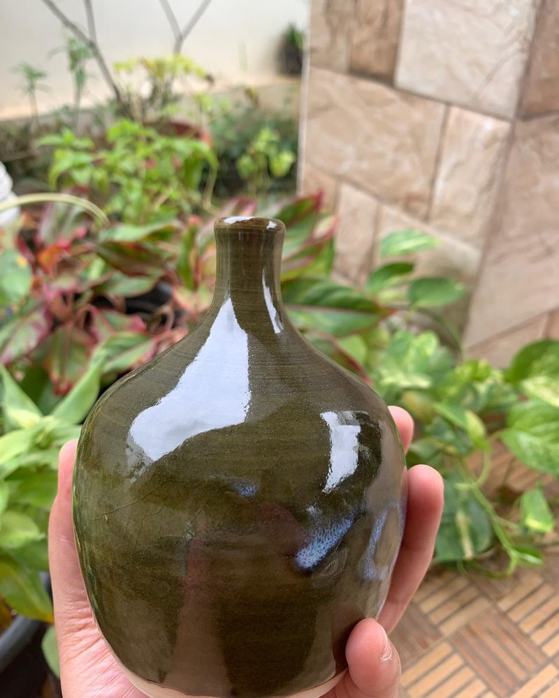
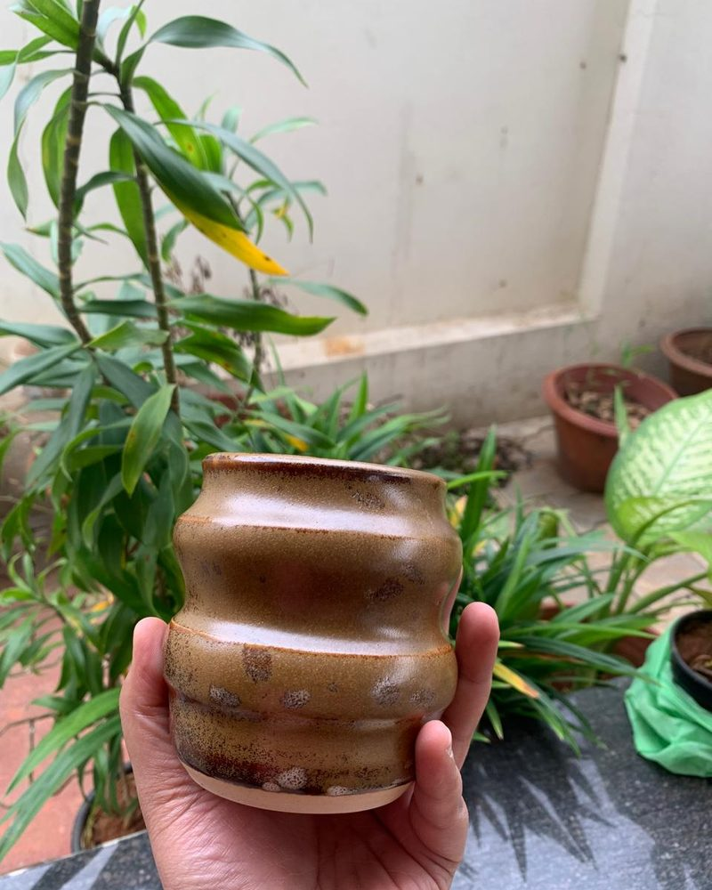
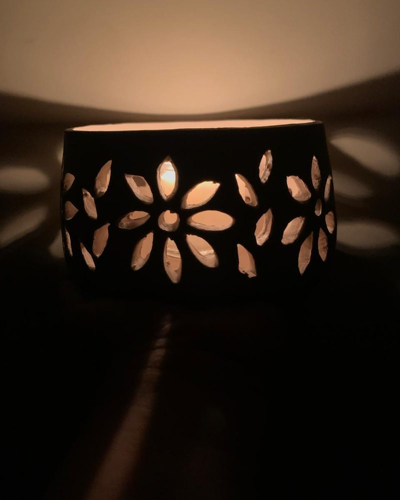
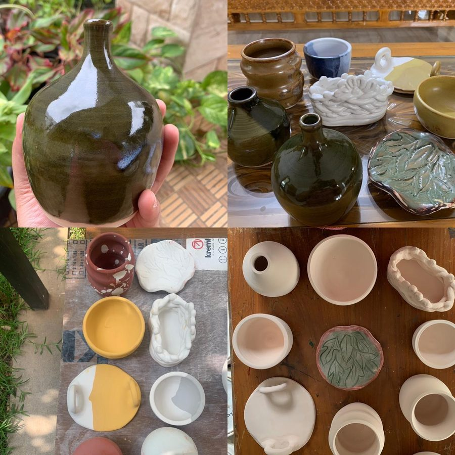
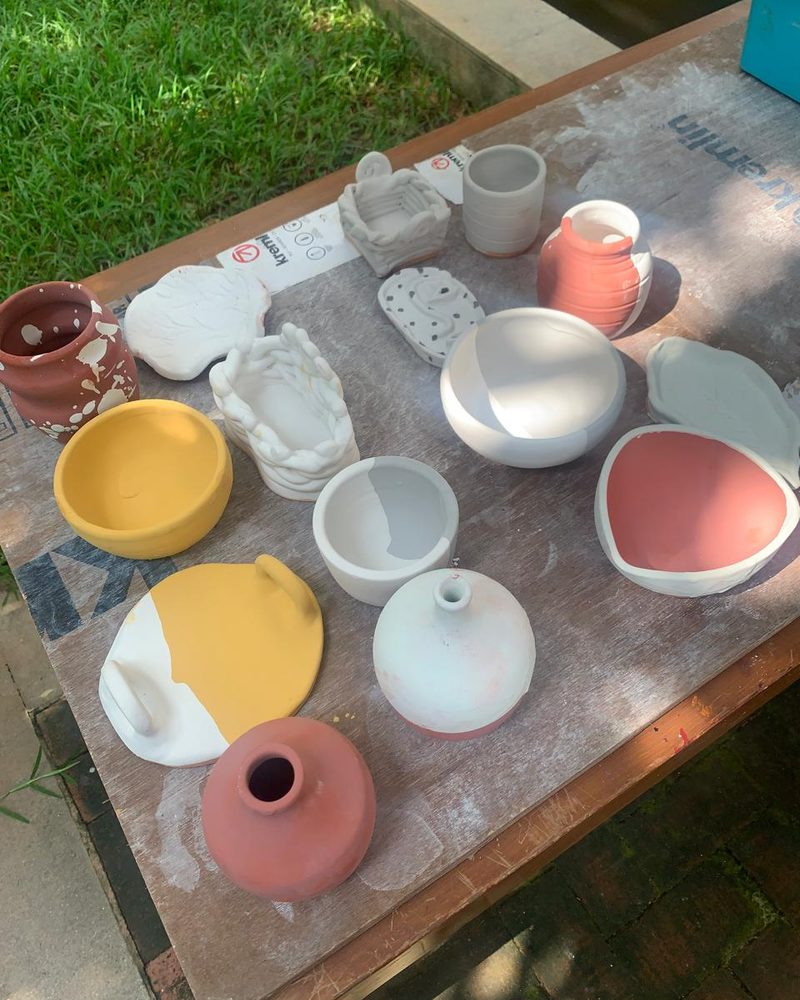
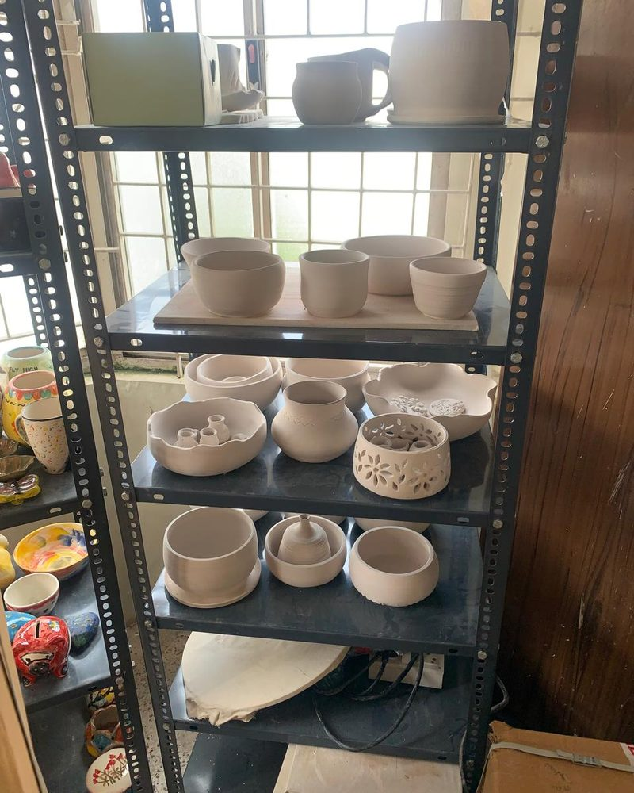

I'm Manimegalai Mamallan, a full-stack software engineer with 6 years building and operating production systems, now focused on integrating LLMs, MCP and agentic AI into the backends people depend on. I ship software that scales to millions and the intelligence layered on top.
I spent six years at Ashok Leyland learning that good software is a craft you do with your hands: architecting high-availability platforms, leading a team of five, and shipping a customer application that grew to 300K+ users, 200K daily actives, and 5M+ daily API calls, work that earned three National Customer Experience Excellence awards.
Now, as I finish my M.S. in Data Science at the University at Buffalo and research ML at Machinery Monitoring Services, I'm fusing the two: building agentic AI layers with MCP and LLMs that make complex live data conversational for non-technical users, on top of the kind of solid backend I've always built.
I care about honest engineering: systems that work under load, and claims I can defend. Whether it's a REST API serving millions or a model that has to beat a real baseline, I'm interested in the version that ships and holds up.
Engineering and ML work, each shaped end to end, with the stack I learned along the way and a result I can stand behind.
A distributed PySpark pipeline joining 7M+ accident records against 8M+ weather and hospital records via temporal-window and geospatial joins, feeding Spark ML severity models. Served through a custom MCP layer that exposes the trained PipelineModels to Claude Desktop for real-time, natural-language inference, with no Spark required by the end user.
F1 up to 0.89615M+ records joinedA Medallion (Bronze/Silver/Gold) lakehouse on Databricks ingesting 40K+ CVE v5 records with schema-on-read PySpark and recursive JSON normalization. Governance and validation gates enforce data quality across layers; optimized Gold-layer SQL surfaces prioritized vulnerability insights for self-service stakeholder reporting.
40K+ CVE records3-layer governanceA two-stage ML pipeline on 80,000 UTI patient records. Stage 1 predicts per-patient antibiotic resistance (Logistic Regression, kNN, Random Forest, GBT) with LASSO / Stepwise-AIC feature selection reducing 790 variables to 396 predictors. Stage 2 selects the lowest-resistance antibiotic via patient-similarity modeling and Youden's-J dynamic thresholds.
94.52% appropriate therapy+6.45% vs. physiciansA normalized PostgreSQL schema modeling customers, sellers, orders, payments, reviews and geolocation. Analytical SQL (joins, aggregations, window functions) surfaces top revenue products and spending patterns; query plans tuned via EXPLAIN, indexing and restructuring. Migrated to SQLite and shipped as a Dockerized Streamlit app for interactive querying.
EXPLAIN-tuned queriesfully containerizedOpen to Software Engineer and AI-integration roles in the U.S. Tell me what you're building, or just say hello.
Outside of engineering, I throw and hand-build ceramics. It's the same discipline as good software: start with raw material, center it, and finish something durable. The patience and precision carry straight back to the work.





